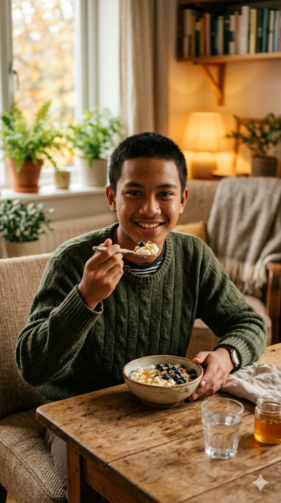
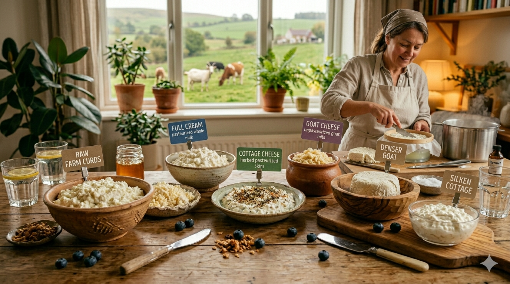

Keju adalah produk makanan berbahan dasar susu (sapi, kambing, domba, atau kerbau) yang dihasilkan melalui proses koagulasi atau pengentalan, di mana protein susu (kasein) dipisahkan dari air dadih (whey) menggunakan bantuan kultur bakteri dan enzim rennet.

Didalam projek ini peneliti melakukan penelitian terkait pembuatan keju menggunakan 3 jenis susu yang berbeda yaitu susu pasteurisasi, susu kambing, dan susu full cream. peneliti ingin meneliti tentang karakteristik dari ketiga susu tersebut, terdiri dari aroma, tekstur, dan rasa.

1. Tuangkan susu ke dalam panci
2. Panaskan susu sampai suhu 60-70 derajat celsius
3. Masukkan rennet dan air lemon
4. Aduk dan biarkan selama 45 menit - 1 jam
5. Saring curd dari whey
6. Tambahkan garam dan aduk
7. Gantung dan biarkan selama 2 jam
8. Keju siap disimpan